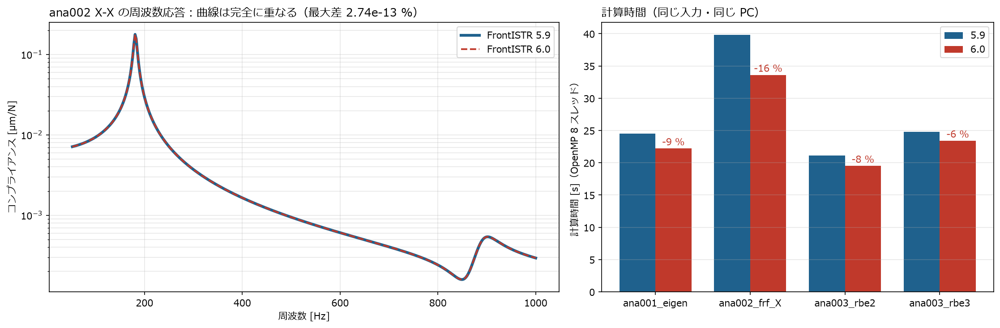

← docs 目次 ｜ ⌂ トップ ｜ ← 前: ref005 ばね・固有値・周波数応答の設定比較 ｜ 次: ana001 簡易工作機械の固有値解析 →
作成: 2026-11-07
このプロジェクトの FrontISTR を 5.9 → 6.0 に上げた。何が変わったかを調べ、ana001〜004 と同じ入力で両方を動かして比べた。
v6.0、VERSION ファイル「Version 6.0
(2026/10/5)」）。5.9（2026-03-26）からの変更は 659 コミット、マージ 約
150 件| 場所 | 版 |
|---|---|
~/opt/frontistr/bin/fistr1 |
6.0（~/opt/frontistr6 へのリンク）。各
ana の run.sh はこれを使う |
~/opt/frontistr59/bin/fistr1 |
5.9（比較用） |
ビルド方法は 5.9 と同じ（ソースを GitLab
から取得、CMake、MPI・METIS・MUMPS なし、OpenMP あり、BLAS/LAPACK は
CalculiX の deb から展開したもの）。 fistr1 -v で
version: 5.9 → 6.0
になったことを確認した。

| ケース | 5.9 時間 [s] | 6.0 時間 [s] | 結果 |
|---|---|---|---|
| ana001 固有値 | 24.5 | 22.2 | 1〜6次 172.2, 181.2, 243.2, 441.8, 474.4, 610.9 Hz：同じ（10次まで差 0.000 %） |
| ana002 周波数応答（X 加振） | 39.8 | 33.6 | ピーク 180.6 Hz・0.1780 µm/N：同じ（全周波数で差 \(3\times10^{-13}\) % 以下） |
| ana003 RBE2（MPC） | 21.1 | 19.5 | 1〜6次 172.2, 183.1, 243.2, 453.5, 486.8, 625.3 Hz：同じ |
| ana003 RBE3（MPC） | 24.8 | 23.4 | 同じ |
| ana004 ばね 3 種類 | 0.0 | 0.0 | −0.25005 / 0.25000 / −0.25000 mm：同じ（手計算 0.25 mm） |
スクリプト: compare.py（元の ana フォルダから入力をコピーして両方の版で実行）、plot.py。全結果: compare.md
6.0 では「周波数応答の結果値の修正」「MPC
を消去したときの固有値解析の質量・正規化の修正」が入っているが、
このプロジェクトのモデル（モード重ね合わせの周波数応答、!EQUATION
の MPC、Lanczos 法）では結果に影響しなかった。
変更の一覧はソースの履歴（git log v5.9..v6.0）のマージ件名から整理した。
| 変更 | 内容 | このプロジェクトへの影響 |
|---|---|---|
| Lanczos 法のシフト量 \(\sigma\) を入力できる | !EIGEN の 4 つ目の値（「モード数, 収束判定, 最大反復,
シフト量」）。従来はプログラム内で固定 |
指定しなければ従来どおり。0 Hz 付近の剛体モードがあるモデルで便利 |
| 収束判定が「要求した低次モード」を見るように | 5.9 までは反復回数が 3〜12 倍に増えたり、上限に達すると見かけのゼロ固有値が出ることがあった | 今回のモデルでは同じ結果。時間短縮の一因と考えられる |
| MPC 消去時の固有値解析の修正 | 質量行列の大きさ、固有ベクトルの正規化、残差の計算を修正 | ana003（!EQUATION）で差なし |
| 消去法で集中質量を剛性と整合させて縮約 | MPC・接触の自由度消去と質量の扱いを揃えた | 差なし |
| 周波数応答の結果値の修正と応力・ひずみの出力 | 周波数応答で応力・ひずみも出せるようになった | 今後、取付部の応力振幅を見るときに使える |
周波数応答の面荷重
!FLOAD（面グループ）に面積の重みを適用 |
面に分布する加振力が正しくなった | 今回は節点への集中加振なので影響なし |
| 周波数応答の領域分割（MPI 並列）対応 | 今回は逐次版 | |
| 整合質量・集中質量の制御を整理 | 整合質量は陰解法の時刻歴応答のみ対応、と明記 | 固有値・周波数応答は従来どおり |
| 変更 | 内容 |
|---|---|
| 面-面（mortar）接触の追加 | !CONTACT, MORTAR=YES。従来の点-面接触より、面どうしの圧力が滑らかに伝わる。ボルト締結面・ガイド取付面の接触剛性を調べるときに使える |
| 接触面の平滑化（Nagata パッチ）・接触反力のダンピング | SMOOTHING=NAGATA、DAMP_ALPHA
など。粗いメッシュでの接触の収束を良くする |
接触と判定する貫入深さを !CONTACT_PARAM で指定 |
既定値も広げた |
| 摩擦（拡張ラグランジュ法）の既定を変更 | FRICTION_CONE の既定を FOLLOW に |
| 動解析の自動増分・カットバック | 時刻歴応答で、収束しないときに時間刻みを自動で小さくする |
| 非線形の動解析で MPC を含むと収束しない問題を修正 | 代表点＋MPC のモデルで時刻歴応答をするときに関係 |
回転速度の境界条件 ROT_CENTER |
動解析で回転体（主軸など）に回転を与える |
| 変更 | 内容 |
|---|---|
| 制御ファイルのキーワードを読み込み時に大文字化 | 小文字で書いても読めるようになった |
fistr1 の終了コードを失敗の種類で分ける |
スクリプトから失敗の原因を判別しやすい |
| シェル要素の修正・拡張 | 板厚を材料から断面へ移動、MITC4 シェルの大変形、直交異方性シェルのせん断補正など |
| 反復法ソルバの設定 | 残差の再計算周期 RECOMPUTE_RESIDUAL、SSOR
の緩和係数など |
| GPU（OpenACC）・富岳（A64FX）向けの統合 | 大規模並列向け |
Ubuntu 26.04 対応、Abaqus 形式の名前を INP
形式に（TYPE=ABAQUS → TYPE=INP） |
書き換えは不要。新しい指定を使う場合の例:
!EIGEN
20, 1.0E-8, 300, 0.0 ← モード数, 収束判定, 最大反復, シフト量 σ（6.0 で追加。省略可）!CONTACT, GRPID=1, INTERACTION=SSLID, MORTAR=YES ← 面-面接触（6.0 で追加）出典: FrontISTR
GitLab（タグ一覧）、ソースの `VERSION`
とマージ履歴（git log --merges v5.9..v6.0）、fistr1/src/common/fstr_ctrl_eigen.f90（!EIGEN
の読み込み）
← docs 目次 ｜ ⌂ トップ ｜ ← 前: ref005 ばね・固有値・周波数応答の設定比較 ｜ 次: ana001 簡易工作機械の固有値解析 →